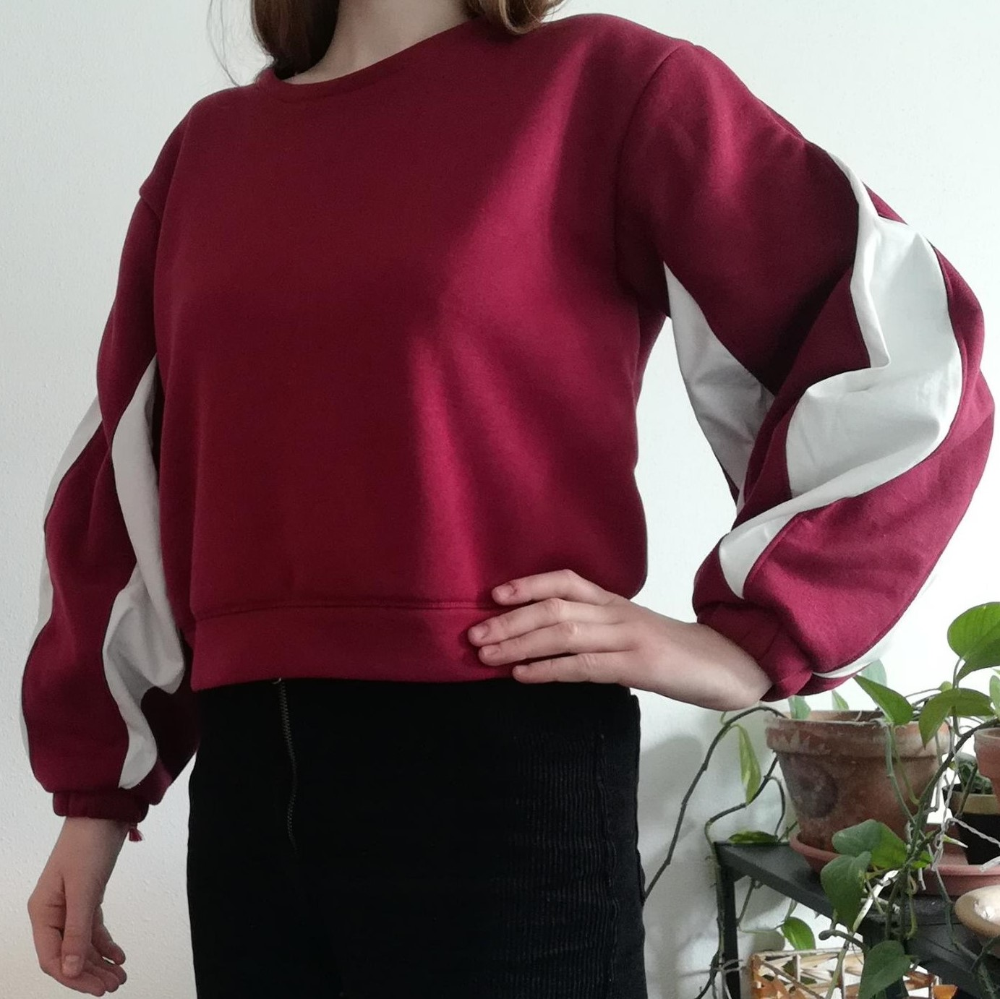

I love integrating history and fantasy inspired pieces into my wardrobe, so I decided to sew myself a renaissance slashed sleeve sweatshirt :)
I drafted the pattern based on a sweatshirt that I own. The sleeve pattern can be seen in the 4th image.
I bought the fabric I used for this project in Amsterdam, the red parts are sweatshirt fabric and the white parts are cotton.
I really love how it turned out!
